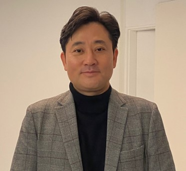

Call for Contributions
We welcome abstract submissions from researchers, practitioners, and stakeholders at institutions worldwide, across all five thematic sessions.
Important Dates
| Milestone | Date | Status |
|---|---|---|
| Abstract Submission Opens | TBA | TBA |
| Abstract Submission Deadline | TBA | TBA |
| Notification of Acceptance | TBA | TBA |
| Early-Bird Registration | TBA | TBA |
| Full Paper Submission (optional) | TBA | TBA |
| Symposium | June 29–July 1, 2026 | Confirmed |
Guidelines
Submission Format
Please prepare your abstract and biography document according to the following specifications before submitting.
Sample Submission
Presentation Title: Ionic Liquids as Emerging Green Solvents for Environmental Applications: Advancements in Solvent Extraction Desalination
Presenter: Jae Woo Lee, Department of Environmental Engineering, Korea University, Republic of Korea
Abstract
Ionic liquids (ILs), characterized by their diverse cation–anion combinations and highly tunable physicochemical properties, offer substantial potential as versatile materials for chemical and pharmaceutical applications. Recently, specific groups of ILs that exhibit reversible miscibility with water and gases at certain temperatures have garnered growing interest for environmental applications, such as solvent extraction desalination (SED) and carbon capture, utilization, and storage (CCUS). SED utilizes solvents to selectively extract pure water from saline streams, followed by water recovery through a temperature-driven gravity-induced phase separation. While carboxylic acids and amines have traditionally served as solvents for SED, ILs have recently been promoted as "green" alternatives to these conventional volatile organic solvents.
This talk presents the fundamental concepts, principles, and methodologies underlying IL-based SED. Furthermore, it will discuss a screening protocol developed by Prof. Lee's group to identify optimal IL candidates for the SED of various saline water sources across different temperature and salinity ranges. By integrating lab-scale experimental data with molecular dynamics (MD) simulations, his research elucidates the complex molecular-level interactions among ILs, water, and salt ions. The developed screening protocol presents a promising strategy for identifying superior cation–anion combinations, ultimately enhancing environmental sustainability through advanced IL design.
Biography

Prof. Jae Woo Lee is a professor in the Department of Environmental Engineering at Korea University, Republic of Korea. He received his Ph.D. in Environmental Engineering from Seoul National University. He is internationally recognized for his research on environmentally sustainable water and energy systems, focusing on biological and chemical transformations of refractory pollutants, bioenergy production from organic wastes, and the application of advanced solvents for desalination and biogas upgrading. He has published extensively in leading peer-reviewed journals and holds numerous domestic and international patents. He currently serves as Editor-in-Chief of Membrane Water Treatment and as Vice President of the Korean Society of Water Environment.
Thematic Areas